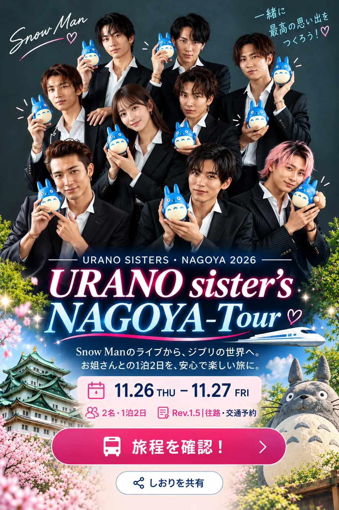

佐野新都市BT → 王子駅
08:55 → 09:55
マロニエ新宿号。乗車日11月26日（木）・大人2名。所要約60分。1人通常1,600円、ネットクレジット決済なら1,520円・2人3,040円。
2026年6月公表表では8:55→9:55。8月改正と11月の運転再開情報は確認していますが、11/26当該便の残席・運転は予約画面で必ず再照合してください。

Snow Manのライブから、ジブリの世界へ。
お姐さんとの1泊2日を、安心で楽しい旅に。
旅程・新幹線と高速バスの予約・ジブリパーク・Googleマップを1ページにまとめました。
第1〜3駐車場は24時間利用可能。2日分の駐車料金は目安1,000円。
バス出発10〜20分前に乗場へ。キャリーケースは必要ならトランクへ。
高速バス約60分。2026年6月公表ダイヤと8月改正後の予約画面で運行・残席再確認。
徒歩約5〜10分。王子駅北口付近。荷物が多ければ余裕を取る。
約20分・乗換なし。IC運賃1人209円の参考。
中央付近の新幹線改札を確認。駅構内の移動に余裕を持つ。
JR公式2026年11月時刻表。普通車指定席が安心。所要96分。
エスカなどできしめん・味噌カツ。行列が長ければ店を変更。
名古屋駅桜通口→イビススタイルズ名古屋。徒歩約8〜12分。
部屋にキャリーを置き、軽装でライブへ。
名古屋駅→JR大曽根→徒歩、または地下鉄名城線でナゴヤドーム前矢田。計35〜50分程度を確保。
入場・セキュリティ確認に余裕を持つ。
公式の終演確定時刻ではありません。出口と駅が混雑する可能性。
手羽先・どて煮など。21時台の最終入店・ラストオーダー確認。
翌日のジブリパーク入園時刻を再確認。
マロニエ新宿号。乗車日11月26日（木）・大人2名。所要約60分。1人通常1,600円、ネットクレジット決済なら1,520円・2人3,040円。
2026年6月公表表では8:55→9:55。8月改正と11月の運転再開情報は確認していますが、11/26当該便の残席・運転は予約画面で必ず再照合してください。
2026年11月26日（木）。所要96分。普通車指定席参考11,300円／1名・22,600円／2名。王子からのJR到着後に40分程度の乗換余裕を確保できます。
指定条件：11/26・大人2名・東京11:12発・名古屋12:48着。キャリーが大きい場合は特大荷物スペース付き座席の要否を確認。
高速バス停はJR王子駅北口周辺。JR京浜東北線の東京・蒲田・大船方面へ乗り、乗換なし約20分。IC参考209円／人・418円／2名。
アウトレットの駐車場への宿泊駐車は想定せず、佐野新都市BTの第1〜3駐車場を利用。24時間500円、翌24時間500円。8:15頃入庫→翌22:50頃出庫なら合計1,000円の目安。東京・新宿方面は2番のりば。
| 区間 | 1人 | 2名 |
|---|---|---|
| 佐野新都市BT→王子 高速バス（WEB決済） | 1,520円 | 3,040円 |
| 王子→東京 京浜東北線（IC） | 209円 | 418円 |
| 東京→名古屋 のぞみ指定席参考 | 11,300円 | 22,600円 |
| 往路公共交通合計 | 13,029円 | 26,058円 |
ジブリパーク公式は荷物を少なくするよう案内。北口案内所にクロークがありますが、数・規格・利用条件を事前確認すること。駅ロッカーの空きも保証できません。
名古屋駅ロッカー案内を探す5エリアすべてと、対象となる建物内部を巡れます。一般発売の平日券は大人7,300円／人ですが、今回の旅行費用では宿泊セット代に含まれている前提で二重計上しません。
各エリア間は屋外を歩く必要があります。5エリアすべてをじっくり見ると時間が足りないため、優先順位を決めてください。園内は場所により撮影制限あり。
時刻は推奨順序の仮案。10時大倉庫指定の場合はホテル出発を8:15〜8:30に繰り上げると安心。名古屋駅の荷物預け、乗換、園内の徒歩時間を考慮してください。
| 時間 | 予定 | 移動手段・目安 |
|---|---|---|
| 07:30〜08:10 | 柳橋中央市場（任意） | ホテル徒歩圏内で朝の市場散歩 |
| 08:45〜09:00 | チェックアウト・荷物を名駅ロッカーへ | 徒歩8〜12分＋ロッカー確保 |
| 09:00〜10:00頃 | 名古屋駅→ジブリパーク | 地下鉄東山線＋リニモ＋徒歩／約50〜65分 |
| 10:00〜16:00頃 | ジブリパークを楽しむ | 大倉庫の時間指定に合わせて園内5エリアを巡る |
| 16:00〜17:10頃 | ジブリパーク→名古屋駅 | リニモ＋地下鉄＋徒歩／約55〜70分 |
| 17:10〜18:00 | ロッカー荷物回収・お土産 | 18:20発の新幹線に余裕を持つ |
| 18:20→19:57 | のぞみ40号・名古屋→東京 | 東海道新幹線／97分 |
| 20:10〜20:40頃 | 東京駅→王子駅 | JR京浜東北線・大宮方面／乗車約20分＋乗換・待ち時間 |
| 20:40〜21:25 | 王子駅北口・高速バス停へ | 改札から国道122号を約200m北上。出発15分前までに到着 |
| 21:40→22:38 | マロニエ新宿27号・王子→佐野新都市BT | 高速バス／58分 |
| 22:38〜22:50 | 降車・駐車場で車へ | 徒歩・荷物受け取り／5〜12分程度 |
| 22:50〜23:20頃 | 自家用車でご自宅へ | 運転10〜30分を仮定。実際の距離次第 |
2026年11月27日（金）、普通車指定席大人2名。所要97分。参考運賃は11,300円／1人、22,600円／2名。購入商品・時期により変動。
列車番号「のぞみ40号」・名古屋18:20発・東京19:57着を指定。巨大なキャリーは特大荷物対応席の条件を確認。
乗車地は「王子駅」、降車地は「佐野新都市バスターミナル」。大人2名。所要58分。普通運賃1名1,600円、ネットカード割引1名1,520円／2名3,040円を試算。
「マロニエ新宿」という便名ですが、新宿から乗る必要はありません。11月27日分の2名の残席は予約画面で確認が必要です。
東京駅の新幹線改札からJR在来線へ。京浜東北線に乗れば王子までは約20分・乗換なし。IC運賃は209円／1人、418円／2名の参考額。東京駅でのホーム移動と待ち時間を含め30〜40分程度を見込みます。
王子駅北口から国道122号を約200m北上した位置にJR高速バスの乗り場があります。キャリーケースを持って移動するため、バス出発15分前（21:25）までに乗り場へ。
| 王子駅発 | 佐野新都市着 | 判断 |
|---|---|---|
| 20:40 | 21:38 | 早いバス。東京19:57着の新幹線だと乗換余裕が小さいため非推奨 |
| 21:10 | 22:00 | マロニエ東京19号。東京駅から王子へのJR接続が順調なら選択可能（予約時に運行・残席確認） |
| 21:40 | 22:38 | 第一候補・乗換に余裕 |
| 22:40 | 23:38 | 遅延時の候補。帰宅は0時過ぎになる可能性 |
| 23:40 | 翌0:38 | 深夜到着・積極的には推奨しない |
追加するなら、ジブリパークの魅力を損ねない場所に絞るのがおすすめです。
ホテル周辺で唯一、無理なく増やしやすい寄り道。早朝の市場を散歩。朝食の有無と店舗営業は事前確認。
名古屋駅に戻るなら新幹線までの余白で天むす・ういろう・駅弁。切符と乗換時間が最優先。
リニモ芸大通駅から徒歩約5分。クルマ好きには魅力的だが、追加すると5エリア十分に回れない可能性。
プレミアム券と佐野20〜21時帰着を優先する場合、同日に組み込むのは現実的ではありません。次回旅行用に候補を残します。
名古屋到着後
味噌カツ。名古屋駅の新幹線側地下街。混雑時はきしめん店へ切替。
21:30頃の入店を想定
手羽先が名物。木曜23:00閉店、料理L.O.22:30の案内。ホテルの東側で夜の移動距離を抑えやすい。
帰りの動線次第
手羽先・どて煮。木曜22:30ラストオーダーの案内。新幹線口側でホテルとは反対側。
12:00前後
ジブリパーク内でランチ。混雑や売切れに備え、軽食にも切替できるようにする。
新幹線の乗車前
帰宅を優先してテイクアウト。名古屋駅構内・駅ビルで調達。
各項目を編集すると棒グラフと合計が更新されます。
48,200円のホテル宿泊セットにプレミアム券が含まれる前提。駐車場1,000円は仮定。入出庫時刻・自宅までの運転距離で変更してください。
Rev.1.7｜2026年10月31日
浦野さんをグループに自然に加えた新デザインをWebトップに反映。iPhoneで人物・タイトルがすぐ見える画像のトリミング、操作できる旅程・共有ボタン、OGPプレビューを新設。
Rev.1.6｜2026年10月31日
27日の帰路を東京駅→JR王子駅→王子21:40発マロニエ新宿27号→佐野新都市22:38着へ変更。バスタ新宿経由を削除、乗換案内と費用を更新。
Rev.1.5｜2026年10月31日
26日往路を佐野新都市BT（自家用車）→王子（高速バス）→東京（JR京浜東北線）→名古屋（のぞみ27号）に変更。時刻、移動・乗換、予約案内、往路費用を更新。
Rev.1.4｜2026年10月30日
帰路を新幹線・中央線・高速バス・自家用車へ変更。時刻表、予約リンク、乗換所要時間、費用計算を更新。
Rev.1.3｜2026年10月30日
表題を「浦野さん姉妹 NAGOYA-Tour」に統一。旅行内容・予約条件は従来版を継続。
Rev.1.2｜2026年10月30日
イビススタイルズ名古屋48,200円、プレミアム券付きの予約、27日のジブリパーク確定を反映。荷物、園内動線、追加観光、費用を全面再設計。
Rev.1.1｜10月30日 iPhone表示・ホテル料金比較・費用計算を改善。
Rev.1.0｜10月29日 旅行の初版。豊川稲荷・伊勢などを含む観光比較を公開。
今後は同じURLをRev.1.8以降へ更新。ホテル予約番号や個人連絡先は公開しません。
内容整理：2026年10月30日。交通ダイヤ・営業時間・観光施設のルール・飲食店の営業は変更される可能性があります。宿泊・チケット情報は伺った内容であり予約明細の直接確認ではありません。